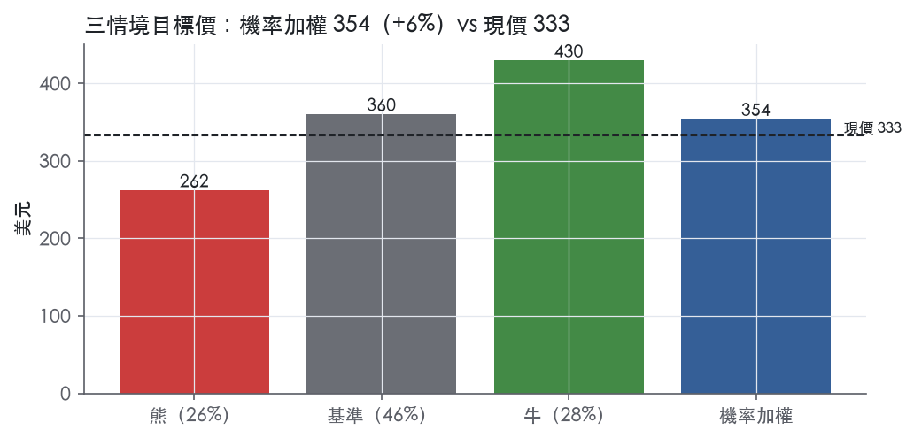
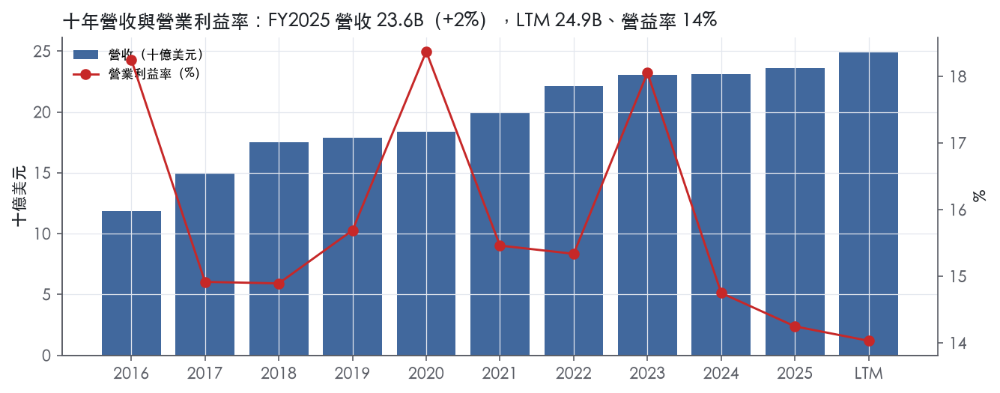
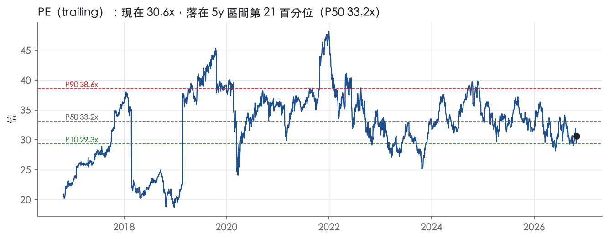
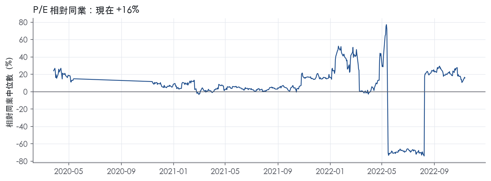
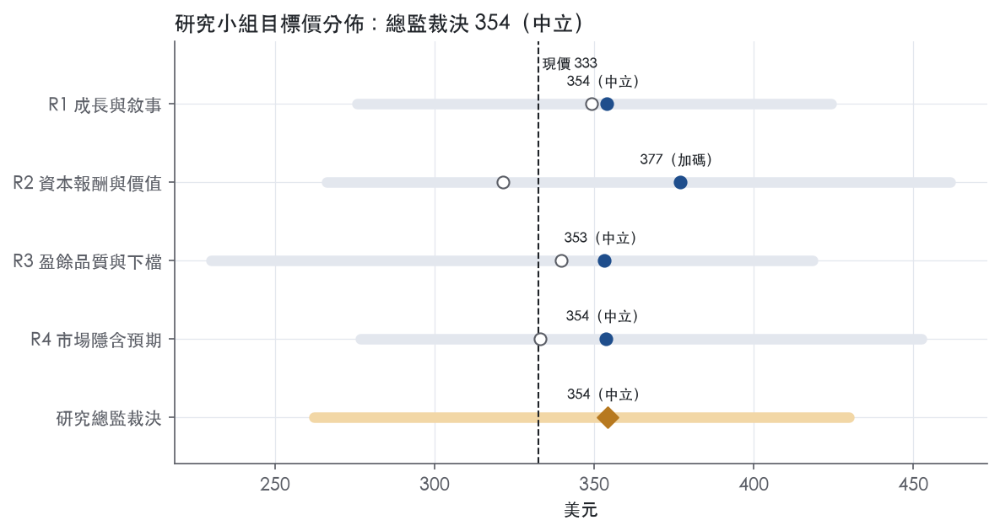
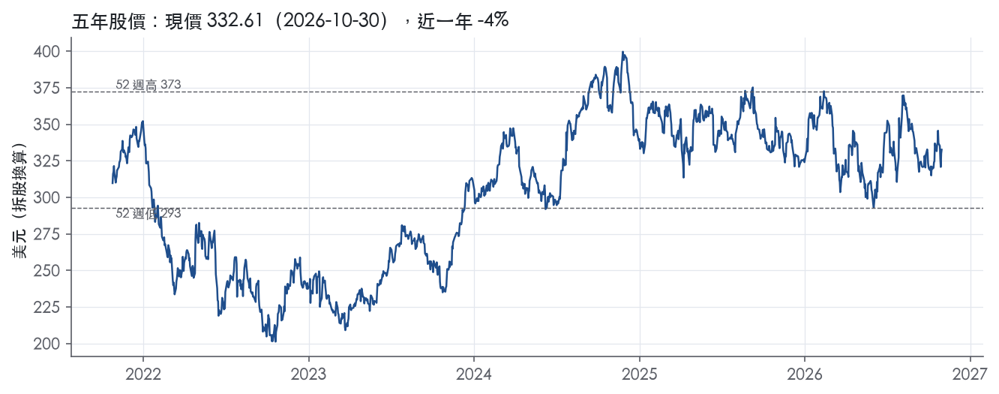

評等總表 › 原物料 › SHW
盈餘上修、倍數持平，中性｜評等 中立｜目標價 354
| 報告日 | 評等 | 目標價 | 當時股價 | 超額報酬 |
|---|---|---|---|---|
| 2026-10-30 | 中立 | 354 | 333 | -0.6% |
| 2026-10-09 | 中立 | 344 | 319 | +0.7% |
| 快評 | 動作 | 結論 |
|---|---|---|
| 2026-10-27 | 提前重開研究小組 | EPS 高於預測，毛利率觸發轉空線 |
| 評等 | 中立 |
| 12 個月目標價 | 354 美元 |
| 現價 | 332.61 美元（2026-10-30） |
| 預期報酬 | 股價 +6.4%＋股息 1.0%＝總報酬 +7.4%；同業籃門檻 8.0%，超額 -0.6% |
| 估值方法 | P/E 28.0x，套在第 5–8 季的EPS（也就是一年後的未來四季） |
| 三情境 | 熊 262／基準 360／牛 430 |
| 研究流程 | 四位研究員兩輪辯論＋研究總監裁決 |
| 資料來源 | SEC EDGAR XBRL、Tiingo、FRED（全免費） |
盈餘上修、倍數持平，中性（研究總監裁決，四位研究員兩輪辯論後）
評等 中立｜12 個月目標價 354 美元（總監三情境機率加權 354 與研究員中位數 354 各半）｜現價 332.61（2026-10-30）
預期報酬：股價 +6.4%＋股息 1.0%＝總報酬 +7.4%。同業籃門檻 8.0%，超額 -0.6%。
估值方法：P/E 28.0x，套在第 5–8 季的EPS（也就是一年後的未來四季）。三情境：熊 262（26%）／基準 360（46%）／牛 430（28%）。
什麼會讓研究總監改變看法：FY2026Q4毛利率低於48.0%且PSG銷量轉負，轉空並把倍數下到前瞻帶P25 25.5x；FY2027Q2毛利率回到49.2%以上且FY2026 ROIC不低於17.8%，轉多並把倍數上到前瞻帶P50 29.6x。
| 過去四季（實際，FY2026Q3） | 未來四季 | 第 5–8 季 | 第 9–12 季 | |
|---|---|---|---|---|
| 營收（B） | 24.9B | 26.2B | 27.3B | 28.6B |
| 營收成長 | 7.0% | 5.0% | 4.5% | 4.5% |
| 營業利益率 | 14.0% | 16.0% | 16.5% | 16.7% |
| EPS（美元） | 10.86 | 11.64 | 12.87 | 13.93 |
| EPS 成長 | 6.1% | 7.2% | 10.6% | 8.2% |
| 每股股息（美元） | 3.19 | 3.19 | 3.19 | 3.19 |
| P/E（現價） | 30.6x | 28.6x | 25.8x | 23.9x |
| 股息殖利率（現價） | 1.0% | 1.0% | 1.0% | 1.0% |
過去四季為申報數字；預測為研究總監的假設、程式計算。倍數與殖利率都用現價計算，用來看現價對應各期獲利的高低。
| 項目 | 上次（2026-10-13） | 這次（2026-11-01） | 變動 |
|---|---|---|---|
| 評等 | 中立 | 中立 | ＝ |
| 機率加權目標價（美元） | 344 | 354 | +2.9% |
| 超額報酬 | 0.7% | -0.6% | -1.3 pp |
| 目標倍數 | 28x | 28x | — |
| 未來四季營收成長 | 5.0% | 5.0% | +0.0 pp |
| 未來四季營益率 | 16.3% | 16.0% | -0.3 pp |
| 未來四季 EPS（美元） | 11.72 | 11.64 | -0.7% |
| 熊／基準／牛機率 | 24／49／27 | 26／46／28 | — |
程式計算；「未來四季」各自從當次報告的資料起點算。研究總監逐點說明見第八章「與上次報告比較」。
| 情境 | 機率（歷史） | 故事 | 未來四季營收成長 | 第 5–8 季營益率 | 倍數 | 目標價 | 股價漲跌 |
|---|---|---|---|---|---|---|---|
| 熊 | 26%（23%） | 本行下行路徑（GDP −0.5、失業率5.3）下PSG量轉負、8%漲價部分回吐（風險表第3條），毛利率續低於48%（第1條），槓桿逾2.5x上緣停止加速買回（第5條），倍數落到前瞻帶P10 23.8x附近 | 2.5% | 15.1% | 24.0x | 262 | -21.2% |
| 基準 | 46%（47%） | Suvinil滿週年後營收5.0%→4.5%，NTM扣息後營益率持平14.0%，Q5–Q8隨原料回落與SG&A效率修復至14.5%，買回放慢至−1.5%，倍數與市場現行前瞻倍數持平 | 5.0% | 16.5% | 28.0x | 360 | 8.4% |
| 牛 | 28%（30%） | 本行上行路徑（GDP 2.8、10年期4.85）房屋周轉回溫、PSG量轉正，8%漲價在WTI回落下全額保留，扣息後營益率15.2%超過FY2024，ROIC止跌使倍數回到前瞻帶P50之上；R2原32x與扣息後16.5%削減，因倍數重評與毛利全額修復難在12個月內同時發生 | 6.0% | 17.2% | 31.0x | 430 | 29.2% |
目標價由程式依研究總監的驅動與倍數計算；機率由研究總監給定。括號內是歷史頻率：把這檔股票過去十年 12 個月報酬的波動形狀，置中在基準情境，結果落在各情境附近的比例。

四位研究員用不同方法各自估值，回應研究總監的質疑後交出第二輪，最後由總監逐點裁決。各研究員的主張見第七章，裁決理由見第八章，完整論證見《研究底稿》。
| 立場（一輪→二輪） | 加權目標價（一輪→二輪） | 評等（一輪→二輪） | 第二輪倍數 | 熊～牛目標價 | |
|---|---|---|---|---|---|
| R1 成長與敘事 | 中性→中性 | 349→354 | 中立→中立 | 31.0x | 276～424 |
| R2 資本報酬與價值 | 看空→看多 | 321→377 | 減碼→加碼 | 29.0x | 266～462 |
| R3 盈餘品質與下檔 | 中性→中性 | 340→353 | 中立→中立 | 29.0x | 230～418 |
| R4 市場隱含預期 | 看空→中性 | 333→354 | 減碼→中立 | 26.0x | 277～453 |
| 研究總監裁決 | 中性 | 354 | 中立 | 28.0x | 262～430 |
目標價由程式依各自的驅動與倍數計算；評等＝機率加權總報酬 − 同業籃門檻。
Sherwin-Williams 成立於 1866 年，從事塗料、塗層及相關產品的開發、製造、配銷與銷售，主要客戶為專業、工業、商業與零售客戶，市場集中於北美與南美，另在加勒比地區、歐洲、亞洲與澳洲有業務¹。公司是一家以直營塗料店＋自有品牌零售＋工業塗層三條腿站立的材料公司。截至 2025 年 12 月 31 日，公司全球員工 64,249 人，其中約 73% 在美國¹。
公司有三個可報告經營分部：Paint Stores Group（塗料店）、Consumer Brands Group（消費品牌）與 Performance Coatings Group（工業塗層），其他業務則歸入 Administrative function¹。Paint Stores Group 在美國、加拿大與加勒比地區共有 4,853 家公司直營特色塗料店，服務建築與工業塗料承包商以及自行施工的屋主，銷售 Sherwin-Williams® 及其他自有品牌建築塗料、保護與海洋塗料、OEM 產品精加工及相關產品¹。Consumer Brands Group 製造並配銷廣泛的品牌與私牌建築塗料、染色劑、清漆、工業產品、木材精加工產品、木材防腐劑、噴塗器、防鏽劑、噴霧罐、填縫劑與黏合劑，銷售對象包括家居中心、五金行、經銷商與通路商，並在拉丁美洲經營 307 家直營特色塗料店；該分部 2025 年總銷售中約 63% 為內部轉移給 Paint Stores Group 銷售的產品¹。Performance Coatings Group 開發並銷售工業塗層，涵蓋木材精加工、一般工業（金屬與塑膠）應用、汽車修補漆、保護與海洋塗料、捲材塗料、包裝塗料與高性能樹脂及色母，透過 Paint Stores Group、該分部 317 家直營分公司、直銷團隊及外部銷售代表銷售給零售商、經銷商、批發商、被授權人及其他第三方配銷商¹。三個分部各自佔集團營收比重 10-K 未逐筆揭露美元絕對數，但從 2026Q3 新聞稿可見 PSG 淨銷售 4.02B、CBG 淨銷售 937.4M、PCG 淨銷售 1.90B（8-K 2026-10-27），顯示 PSG 仍是營收主力、CBG 規模最小但受 Suvinil 併購推動成長最快。公司強調各分部的競爭優勢來自產品品質、技術、產品創新、產品線寬度與價格¹。
通路分工清楚：Sherwin-Williams® 品牌產品僅透過超過 5,400 家公司直營門店與分公司銷售，其他品牌則透過主要量販商、家居中心、獨立塗料經銷商、五金行等通路銷售²。Paint Stores Group 任一單一客戶流失都不會對該分部業務造成重大不利影響¹，但 Consumer Brands Group 與 Performance Coatings Group 都有對個別客戶占比較高的銷售集中度¹。地理上，公司業務主要集中北美與南美，另涵蓋加勒比、歐洲、亞洲與澳洲¹，2025 年 10 月收購巴西品牌 Suvinil 後，CBG 在拉丁美洲與國際市場的曝險進一步提高³。原材料採購方面，樹脂與乳膠、顏料、添加劑、溶劑及金屬或塑膠容器為主要原料類別，多數源自上游石化及丙烯等相關商品原料，公司採多供應商全球採購以分散風險¹。銷售季節性集中在第二、三季，公司通常在第一季建立庫存以應對旺季需求¹。
2025Q4 合併營收 5.60B，年增 5.6%，EBITDA 0.84B（is/dv 對應 FY2025Q4）。2026Q1 營收 5.67B、年增 6.8%，EBITDA 0.86B，營益率降至 11.9%，顯示淡季利潤率結構性偏低（資料包 FY2026Q1）。2026Q2 合併淨銷售增 7.5% 至 6.79B，稀釋每股淨利增 14.3% 至 3.43 美元，EBITDA 增 13.8% 至 1.43B，占營收 21.1%³；公司表示第二季採取重組措施，預計每年可節省約 17M 美元，並宣布 Paint Stores Group 自 9 月 1 日起加價 8%³。2026Q3 合併淨銷售增 7.9% 至 6.86B，稀釋每股淨利增 0.9% 至 3.38 美元，調整後每股淨利增 1.1% 至 3.63 美元，EBITDA 增 3.4% 至 1.39B（占營收 20.3%）²；三個分部銷售皆成長，PSG 同店銷售增 3.9%，CBG 因 Suvinil 併入大增 21.7% 但分部利潤率因原料成本與匯損下滑至 15.6%（調整後 18.3%），PCG 營收增 8.8%、利潤率小幅收斂至 13.4%（調整後 16.2%）²。公司將全年每股稀釋淨利指引修正為 10.92–11.22 美元，調整後每股淨利指引收斂為 11.85–12.15 美元，並預期第四季合併淨銷售將以中個位數百分比成長²。四季趨勢：毛利率受原料成本上升、Suvinil 併購稀釋及產品組合不利影響連續承壓，但公司以漲價與 SG&A 效率化對沖。
CEO Heidi Petz 表示，第三季在需求疲弱環境下，公司仍持續贏得新客戶、提高客戶錢包份額，三個可報告分部的銷售成長皆達到或超過指引，受惠於公司為客戶提供的差異化價值與生產力²。公司同時採取審慎的定價與成本行動以應對通膨壓力，並持續在整個公司範圍內識別與執行效率改善²。管理層強調聚焦「贏得市場、服務客戶、對沖通膨、降低成本並持續創造獲利成長與股東價值」作為應對當前疲軟需求環境的核心策略²。第二季新聞稿中管理層亦指出，公司將持續運用其差異化模式的競爭優勢、簡化業務並提升執行力，以在原料、能源、物流與包裝成本廣泛上升的背景下維持毛利³。整體而言，Sherwin-Williams 的成長引擎仍是「直營門店份額擴張＋跨分部定價轉嫁＋併購（Suvinil）擴充消費品牌國際布局」的組合。在需求面持續疲軟、公司主要靠漲價與成本紀律撐住利潤率的情況下，毛利率能否在 Suvinil 整合完成後回升，將是觀察未來兩個季度執行力的關鍵。

Sherwin-Williams 的護城河評為寬，我們有把握未來 10 年以上 ROIC 仍高於資本成本。護城河來自兩處：自有品牌的價格力，以及「自有工廠＋直營門店」垂直整合帶來的成本與通路密度優勢；兩者短期內都沒有被複製的跡象。趨勢評為穩定而非變寬，因為近三年 ROIC 與營益率連續下滑，數字上看不到護城河在擴大。
無形資產（品牌）是第一個來源，證據是公司自己承認品牌對營收有實質貢獻。10-K 原文寫道，公司擁有或授權的商標與商號受客戶認可，整體上對銷售有重大貢獻¹。品牌組合橫跨三個分部，包括 Sherwin-Williams®、Duration®、Emerald®、SuperPaint®、Minwax®、Krylon®、Valspar®、Purdy® 等¹。專利不在優勢來源之內，因為公司明說專利與授權對整體業務或任何分部都不具重大重要性¹。
成本優勢（垂直整合＋直營通路密度）是第二個來源，也是最難被複製的一塊。Paint Stores Group 截至 2025 年 12 月 31 日在美國、加拿大與加勒比地區有 4,853 家公司直營特色塗料店，所售產品多數由 Consumer Brands Group 的工廠生產¹。Consumer Brands Group 2025 年總銷售中約 63% 是內部轉移，主要透過 Paint Stores Group 賣出¹。部分特殊樹脂及其他產品由公司自製¹。這個結構讓公司同時賺製造與零售兩段利潤，並省掉第三方通路的加價；競爭對手若要複製，必須在同一區域鋪出同等密度的門店，資本與時間門檻都很高。門店服務的對象是建築與工業塗料承包商以及自行施工的屋主，任一單一客戶流失都不會對該分部造成重大不利影響，代表客戶基礎分散、議價力在公司這一側¹。
轉換成本、網路效應與效率規模不列入，因為 10-K 原文沒有提供可支撐的直接證據。
量化底稿支持「寬」的評級：ROIC 長期高於資本成本，而且利潤率波動小。ROIC 十年平均 20.6%、最低 15.8%，資本成本代理值 10.0%，ROIC 平均減資本成本為 10.7%，有資料的 9 年中 9 年都高於資本成本。最低的那一年（FY2018，ROIC 15.8%，資料包年度表）也還站在資本成本之上，這是寬護城河應有的樣子。營業利益率十年標準差只有 1.5%，毛利率標準差 2.7%，經歷原料通膨、疫情與房市降溫，利潤率仍維持穩定。
數字也有和主張衝突的地方，我們照實寫出：ROIC 由 FY2023 的 23.9% 降到 FY2024 的 19.6%，再降到 FY2025 的 17.8%（資料包年度表），最新值低於十年平均 20.6%。營業利益率最新值 14.2% 等於十年最低值，FY2026Q3 單季毛利率 47.8% 也低於 FY2025Q3 的 49.2%（資料包季度表）。
我們仍維持「寬」，理由有三。第一，毛利率最新 48.8% 高於十年平均 45.8%，定價力沒有流失；營益率下滑發生在毛利以下的費用層，屬於成本結構問題，不是品牌失靈。第二，ROIC 下滑和資本密度上升同時發生：資本支出/營收由 FY2021 的 1.9% 升到 FY2024 的 4.6%（資料包年度表），而 Administrative function 包含新的全球總部與研發中心的費用與資產¹。這比較像一次性的分母膨脹，不像護城河被侵蝕。第三，即使維持最新的 17.8%（資料包 FY2025），ROIC 對資本成本仍有明顯緩衝。ROE 最新 59.4%受財務槓桿放大，所以不拿來當護城河證據。
最大的風險是費用率回不去：如果營益率持續停在十年低點，ROIC 會繼續往資本成本靠攏，屆時評級要下修為窄。
目標倍數相對同業應給予溢價，因為 ROIC 長期高於資本成本、利潤率波動低，而且我們有把握這個狀態可以延續 10 年以上。溢價幅度不宜高於公司自身歷史中位數：現在 P/E 30.6x，低於 5 年 P50 33.2x；在 ROIC 止跌、營益率回升之前，不支持估值回到 5 年 P90 38.6x。若未來兩年營益率仍停在 14.2%附近，應把溢價期限縮短到 5 年，對應評級下修為窄。
| 指標 | 最新 | 十年平均 | 標準差 | 最低 | 最高 |
|---|---|---|---|---|---|
| ROIC | 17.8% | 20.6% | 3.2% | 15.8% | 26.4% |
| 毛利率 | 48.8% | 45.8% | 2.7% | 42.1% | 49.9% |
| 營業利益率 | 14.2% | 16.0% | 1.5% | 14.2% | 18.4% |
| FCF 利潤率 | 11.3% | 10.5% | 2.7% | 5.8% | 16.9% |
| ROE | 59.4% | 57.5% | 13.7% | 30.1% | 72.9% |
程式計算。資本成本代理值（10 年債＋5%）：10.0%；ROIC 平均減資本成本：10.7%；ROIC 有資料的 9 年中，高於資本成本 9 年。
Sherwin-Williams 的盈餘品質主軸是「現金沒問題，資本結構在收緊」。CFO/淨利 LTM 1.38x、三年均 1.33x、十年均 1.33x 全部綠燈，FCF/淨利 LTM 1.15x 同樣綠燈，顯示淨利不是靠應計堆出來的。但淨負債/EBITDA LTM 2.72x 較三年均 2.35x、十年均 2.39x 走高轉黃，利息保障倍數 LTM 6.49x 低於三年均 8.46x、十年均 9.09x 同樣轉黃，這兩項合起來代表槓桿正在上升、不是歷史常態。
現金持續跟上盈餘，LTM CFO/淨利 1.38x、FCF/淨利 1.15x，三年與十年平均都維持在 1x 以上或接近。應計比率 LTM -3.7%、三年均 -3.5%、十年均 -3.1%，皆為負值且遠優於 5.0% 紅燈門檻，代表淨利長期低於現金流、盈餘不是應計堆出來的。但季度層級不穩定：FY2025Q1 與 FY2026Q1 CFO 分別只有 -0.06B、0.14B，FCF 甚至 -0.25B 及 0.00B，第一季現金流明顯弱於淨利，這與公司揭露的季節性一致——第一季為建立庫存期、第二三季才是主要銷售旺季¹。LTM 層級的強勁數字主要靠第二、三季撐起（FY2026Q2 CFO 1.35B、FY2026Q3 CFO 1.10B），這是結構性季節性而非盈餘品質問題。
公司在非 GAAP 調整中加回兩項：Valspar 收購相關攤銷費用與重組/遣散費用²。第三季 GAAP 稀釋 EPS 3.38 美元，調整後 EPS 3.63 美元，差距主因為每股 0.21 美元的 Valspar 攤銷費用與每股 0.04 美元的重組費用（三季度合計 0.25 美元/股）²。全年指引層面，GAAP 稀釋 EPS 區間 10.92–11.22 美元，包含全年 Valspar 攤銷 0.82 美元/股與遣散重組費用 0.11 美元/股，調整後指引區間則為 11.85–12.15 美元²。分部層級看，Valspar 攤銷對 CBG 第三季利潤率的拖累達 170 個基點（本季）、對 PCG 達 260 個基點²，顯示這筆攤銷是真實且持續的收購成本分攤，不是一次性項目。遣散與重組費用規模遠小於攤銷（CBG 100bp、PCG 20bp），且逐季都在發生，比較像是常態性的組織調整支出而非單次重組。整體而言，Valspar 攤銷是非現金、源自 2016os年代收購的會計分攤，估值時可以合理加回去評估現金獲利能力，但不能完全忽視，因為它反映的是公司確實為收購支付過真實代價。
槓桿正在墊高，淨負債由 FY2024 的 9.68B、FY2025 的 10.66B 升至最新快照的 11.53B（dv/bs 年度數字），同時總債務從 FY2025Q4 的 10.87B 一路升到 FY2026Q3 的 11.80B（資料包八季表）。公司自己點名原因：「Administrative function 因增加的債務而產生額外利息費用」拖累了本季稅前利益²。這與 2025 年 10 月完成的 Suvinil 收購時點吻合，Suvinil 年化銷售約 525M 美元⁴，收購多半以舉債方式完成，直接推升了淨負債與利息費用。股東回饋方面，公司第三季透過股利與回購返還 749.0M 美元給股東²，前九個月累計透過股利與回購返還 2.98B 美元現金、同期 CFO 為 2.59B 美元²，顯示今年以來股東回饋金額已經超過當期營業現金流，部分靠增加的債務支應。稀釋股數持續net減少（LTM 年變動 -1.3%），回購確有在減少股數而非只是抵銷SBC稀釋。
淨負債/EBITDA 轉黃（LTM 2.72x vs 十年均 2.39x）：真實但可解釋，主因是 2025 年 10 月的 Suvinil 收購以及公司揭露的「增加的債務」帶來的額外利息支出²，是一次性併購驅動的槓桿墊高而非營運惡化，但在倍數還沒回落前，應計入估值折價考量。
利息保障倍數轉黃（LTM 6.49x vs 十年均 9.09x）：與上一條同源，分母利息費用上升、分子因 Valspar 攤銷壓低了營業利益，兩者疊加放大了惡化幅度，屬於會計與融資結構共同造成、非單純現金獲利衰退。
（股利＋回購）/淨利轉黃（LTM 29.3% vs 十年均 27.2%）：此黃燈其實是「偏低」觸發（規則為 ≥50% 才算綠燈），顯示公司回饋相對保守，不是過度回饋風險，反而說明有餘裕繼續加碼或優先去槓桿，屬於假警報。
應收帳款成長 − 營收成長 FY2025 達 +14.8pp（黃燈，接近紅燈 15pp 門檻）：這是本表中最需要留意的一條，10-K 原文沒有直接對應段落解釋應收帳款增速，公司僅提到「營運資金項目（存貨與應收帳款）通常透過短期借款融資」屬季節性常態運作模式¹，但沒有具體說明本期應收帳款為何顯著超越營收增速；考慮 FY2025 全年 Suvinil 收購剛好在 10 月並表，新併入業務的應收帳款入帳可能是部分原因，但原文未證實，判定為未完全解釋的真實紅旗，需留意是否為壓貨或信用放寬。
存貨成長 − 營收成長 FY2025 為 -0.7pp（綠燈）：無問題，存貨控制良好，沒有堆貨現象，与公司「季節性建庫存於第一季」的描述一致，不構成風險¹。
SBC/營收與稀釋股數：皆為綠燈且本系統不對 SBC 加回處理，SBC/營收 LTM 僅 0.5%，對盈餘品質影響極小，非紅旗項目。
估值應以調整後 EPS（11.85–12.15 美元指引區間）²作為獲利能力基礎，因為 Valspar 攤銷是收購導致的非現金分攤，但分析師應知道這筆攤銷反映真實歷史收購成本，不宜完全加回當作「免費」利潤。槓桿上升（淨負債/EBITDA 2.72x）與利息保障走弱（6.49x）應該限制估值倍數上緣，尤其在 Suvinil 整合效益尚未完全顯現、且管理層自己預期 2026Q4 與 2027 年需求仍然「muted」的背景下²，建議對 P/E、EV/EBITDA 類倍數使用偏謹慎的區間而非歷史中樞之上。未解釋的應收帳款成長紅旗應在估值模型中保留觀察，若下一季未見回落，建議對營收品質打折。
| 項目 | LTM | 近三年 | 十年 | 燈號 | 規則 |
|---|---|---|---|---|---|
| 營業現金流／淨利 | 1.38x | 1.33x | 1.33x | 綠 | ≥1.00x 綠、<0.80x 紅 |
| 自由現金流／淨利 | 1.15x | 0.97x | 1.08x | 綠 | ≥0.90x 綠、<0.60x 紅 |
| 應計比率（(淨利−CFO)／平均總資產） | -3.7% | -3.5% | -3.1% | 綠 | ≤0.0% 綠、>5.0% 紅 |
| SBC／營收 | 0.5% | 0.5% | 0.5% | 綠 | ≤3.0% 綠、>8.0% 紅 |
| 淨負債／EBITDA | 2.72x | 2.35x | 2.39x | 黃 | ≤1.50x 綠、>3.00x 紅 |
| 利息保障倍數（營業利益／利息） | 6.49x | 8.46x | 9.09x | 黃 | ≥8.00x 綠、<3.00x 紅 |
| 稀釋股數年變動 | -1.3% | -1.5% | -1.4% | 綠 | ≤0.0% 綠、>3.0% 紅 |
| （股利＋回購）／淨利 | 29.3% | 27.9% | 27.2% | 黃 | ≥50.0% 綠、<0.0% 紅 |
| 應收帳款成長 − 營收成長（FY2025） | +14.8pp | — | — | 黃 | ≤5pp 綠、>15pp 紅 |
| 存貨成長 − 營收成長（FY2025） | -0.7pp | — | — | 綠 | ≤5pp 綠、>15pp 紅 |
程式計算；燈號以 LTM（無則近三年平均）判定。
| 風險 | 觸發指標（看什麼數字、在哪裡看） | 對 EPS 的影響方向與粗略幅度 | 未來 12 個月發生機率（高／中／低） | 出處 |
|---|---|---|---|---|
| 原材料／供應鏈成本上升侵蝕毛利率 | 季度毛利率（目前 47.8%，FY2026Q3）、COGS 年增率，於財報新聞稿與 10-Q/10-K 揭露 | 負向，中～大；FY2026Q3 毛利率已較 2025 同期 49.2% 下滑，公司承認是當季利潤壓力主因（ltm 毛利率 vs FY2025 48.8%） | 高 | 8-K 財報新聞稿（2026-10-27） |
| Suvinil 併購整合與拉美曝險稀釋利潤率 | CBG 分部利潤率（FY2026Q3 為 15.6%，去年同期 20.4%）、拉美匯率與通膨（阿根廷高通膨經濟）揭露 | 負向，中；CBG 分部利潤 FY2026Q3 年減 7.1%（$146.2M vs $157.3M） | 高 | ²¹ |
| 需求疲軟限制漲價轉嫁空間，量價背離 | PSG 同店銷售成長率與銷量 vs 售價貢獻拆分（新聞稿逐季揭露，量 vs 價） | 負向，中；公司明言「muted underlying market volumes」，漲價貢獻遠高於銷量貢獻 | 中 | 8-K 財報新聞稿（2026-10-27） |
| 環境／訴訟負債（Gibbsboro 等場址）意外攀升 | 環境應計負債餘額（short-term 52.7M＋long-term 224.9M，FY2025）、EPA 往來函件揭露變化 | 負向，方向明確、幅度不可預估（原文未給具體上限情境） | 低 | 10-K 年報 FY2025 Item 1A（風險因素） |
| 利率與槓桿上升推高利息費用、壓縮淨利 | 淨負債/EBITDA 比率（2.4x，2025 年末）、長期債務到期與再融資利率 | 負向，中；利息費用 2025 年已年增 $49.3M，若長債到期時利率維持高位將持續侵蝕稅前利潤 | 中 | 10-K 年報 FY2025 Item 1（業務） |
原材料與供應鏈成本上升是當前最直接的盈餘風險，FY2026Q3 新聞稿明確指出，毛利率受「higher raw material and supply chain related costs」及產品組合不利影響，季度毛利率已從 49.2% 降至 47.8%²。管理層表示排除 Suvinil 稀釋後年初至今毛利率與去年持平，意味現有漲價動作大致只能打平原料成本漲幅，沒有額外空間吸收新的衝擊²。監測方法很直接：每季看毛利率是否持續低於去年同期，若跌破 47% 以下，代表漲價策略失靈，EPS 下修壓力會立即體現在調整後每股淨利指引區間（目前 11.85–12.15 美元）²。
Suvinil 併購整合是第二大風險，因為它同時帶來營收成長（CBG 第三季營收年增 21.7%）與利潤率稀釋（CBG 分部利潤率由 20.4% 降至 15.6%，分部利潤絕對數年減 7.1%）²。公司內控報告也承認 Suvinil 被排除在 2025 年內控有效性評估範圍外，其總資產占比約 5.0%，代表會計與營運整合尚未完全納入既有控制框架，存在執行風險¹。此外拉美業務本身暴露在阿根廷等高通膨經濟與匯率波動中，已實際造成外匯交易損失增加¹。觀測指標是每季 CBG 分部調整後利潤率，若連續兩季未見回升趨勢，代表整合比預期慢。
需求疲軟下的量價背離反映公司目前靠「價」撐「量」的模式有上限。CEO 明確說「despite muted underlying market volumes」，且 PSG 同店銷售 3.9% 成長主要來自中個位數的售價貢獻，銷量僅低個位數增長²。這代表若未來繼續漲價（9 月已執行 PSG 加價 8%），終端客戶（承包商、屋主）承受力一旦觸頂，銷量可能轉負，營收成長引擎會從量價雙升變成量跌價撐，對毛利與費用攤銷都不利。監測指標是新聞稿逐季拆分的「selling price impact」與「sales volume growth」百分點。
環境與訴訟負債雖然公司長期強調「not material」，但審計師將 Gibbsboro 場址列為關鍵審計事項（Critical Audit Matter），顯示這塊估計的不確定性在審計層級已被特別關注，不是例行揭露⁴。目前應計負債合計約 277.6M（52.7M＋224.9M），但原文承認實際成本可能顯著高於目前應計金額，且差額入帳會直接衝擊當期淨利⁴。發生機率設為低，是因為這類負債調整通常緩慢、分階段認列，但一旦 EPA 要求擴大整治範圍，單季增提金額可能不小。
利率與槓桿風險源自於公司淨負債/EBITDA 已達 2.4 倍，超出 2.0–2.5 倍目標區間上緣¹，且 2025 年因新總部與研發中心、短期借款增加，利息費用已年增 49.3M 美元至 465.0M 美元¹。公司仍有財務覆蓋空間（符合 3.75x 槓桿契約上限），但若高利率環境延續到長期債再融資窗口，利息費用將持續侵蝕稅前利潤，直接壓縮 EPS。
高個位數漲價策略的「客戶流失彈性」未被量化揭露：10-K 僅說 PSG 單一客戶流失不會造成重大影響，但沒有揭露整體漲價後的客戶流失率或市占率變化數字，而目前營收成長高度依賴售價貢獻，若競爭對手未同步跟進漲價，SHW 可能面臨份額流失但公司不會主動揭露早期訊號。
CBG 內控範圍排除 Suvinil 的時間落差風險：公司明確揭露 Suvinil 內控未納入 2025 年評估範圍，但沒有說明何時會完成整合評估，這段空窗期若發生財報編製或資產減損的判斷錯誤，市場可能事後才發現，建議緊盯下一份 10-K 是否將 Suvinil 納入內控範圍作為整合進度的代理指標。
現價 332.61 對應 trailing（過去四季）P/E 30.6x、EV/EBITDA 21.7x、EV/EBITA 23.9x、EV/Sales 3.7x、FCF 殖利率 3.8%。主要估值倍數 P/E 現在 30.6x，落在5 年區間第 21 百分位（P10／P50／P90 = 29.3x／33.2x／38.6x）。

把程式的機械基準預測放到現價下，市場付的前瞻倍數是：P/E（未來四季） 32.5x、P/E（第 5–8 季） 29.5x。反推 DCF 顯示市價隱含未來五年營收年成長 14.3%（WACC 9.0%、終值成長 3.0%、FCF 利潤率 11.4%，SBC 不加回）。
| 倍數 | 現在 | 5 年 P10 | 5 年 P50 | 5 年 P90 | 現在分位 | 全期 P50 |
|---|---|---|---|---|---|---|
| P/E | 30.6x | 29.3x | 33.2x | 38.6x | 20.6% | 33.4x |
| EV/EBITDA | 21.8x | 17.6x | 20.6x | 24.0x | 67.4% | 19.5x |
| EV/EBITA | 24.0x | 18.8x | 22.1x | 26.1x | 71.9% | 21.0x |
| EV/EBIT | 26.4x | 20.5x | 23.9x | 28.7x | 72.6% | 22.8x |
| EV/Sales | 3.7x | 3.2x | 3.9x | 4.5x | 32.1% | 3.7x |
| P/S | 3.2x | 2.8x | 3.5x | 4.0x | 33.4% | 3.1x |
| P/FCF | 26.2x | 28.0x | 38.5x | 51.5x | 5.1% | 29.8x |
trailing 倍數（股價 ÷ 過去四季）；分位以每個交易日計算。
同業籃：TSCO, FAST, GRWG, IPW（SIC 5200 同業 6 家中，CY2025 營收最接近的 4 家）。評等門檻 —：同業「倍數不變下持有一年」的隱含報酬中位數（＝ FCF 殖利率 ×(1＋g)＋g，g 為 5 年營收年複合成長並夾在 −2%～8%），每家夾在 0～15%、P/E 低於 5 倍視為資料可疑而排除，中位數再限制在 10 年債到 10 年債＋5% 之間；排除：GRWG（隱含報酬算不出來）、IPW（隱含報酬算不出來）。
| 代號 | 市值 | 5 年營收 CAGR | 營益率 | ROIC | P/E | 5 年 P/E 中位數 | EV/EBITDA | P/FCF | 隱含報酬 |
|---|---|---|---|---|---|---|---|---|---|
| SHW | 80.4B | 5.1% | 14.0% | 17.8% | 30.6x | 33.2x | 21.7x | 26.1x | 9.2% |
| TSCO | 17.7B | 7.9% | 8.5% | 28.7% | 9.6x | 24.5x | 10.6x | 57.7x | 9.8% |
| FAST | 59.6B | 7.7% | 20.5% | 34.2% | 42.0x | 35.7x | 29.1x | 50.6x | 9.9% |
| GRWG | 0.1B | -3.5% | -10.8% | — | — | — | — | — | — |
| IPW | 0.0B | -18.1% | -60.5% | — | — | — | — | — | — |
| 同業中位數 | 2.1% | -1.2% | 31.5% | 25.8x | 30.1x | 19.8x | 54.2x | — |
全部 trailing，程式以各公司 SEC XBRL 與 Tiingo 行情計算；第一列為本檔。
P/E 相對同業中位數：現在 15.9%，過去 1 年平均 1.9%、3 年 4.5%、5 年 —；EV/EBITDA 相對同業中位數：現在 11.3%，過去 1 年平均 5.8%、3 年 0.8%、5 年 —。

事後實現前瞻倍數帶（P/E，2018-11-19..2025-11-17）：P10／P50／P90 = 23.8x／29.6x／39.0x。它是每個交易日的股價除以之後四季實際實現的指標；一年後，今天的第 5–8 季正是那時的未來四季，所以這條帶是 12 個月目標價的同口徑倍數。因為用的是事後實際而非當時預期，過去成長超乎預期的公司這條帶會偏低。
程式的機械基準（成長率從過去四季年增率三年收斂到 6%、利潤率持平）用 事後實現前瞻 P/E P50 估值得到 333（0.3%），市場現行前瞻倍數（現價 ÷ 基準 未來四季指標）一年後持平，套在基準 第 5–8 季指標得到 366。這兩個數字只是參考點，不是本報告的目標價；研究員對這個定價的回應在第七章。
下表是每位研究員第一輪（各自獨立）與第二輪（回應研究總監的質疑後）的結果。目標價全由程式依各自的假設計算。
| 立場（一輪→二輪） | 加權目標價（一輪→二輪） | 評等（一輪→二輪） | 第二輪倍數 | 熊～牛目標價 | |
|---|---|---|---|---|---|
| R1 成長與敘事 | 中性→中性 | 349→354 | 中立→中立 | 31.0x | 276～424 |
| R2 資本報酬與價值 | 看空→看多 | 321→377 | 減碼→加碼 | 29.0x | 266～462 |
| R3 盈餘品質與下檔 | 中性→中性 | 340→353 | 中立→中立 | 29.0x | 230～418 |
| R4 市場隱含預期 | 看空→中性 | 333→354 | 減碼→中立 | 26.0x | 277～453 |
| 研究總監裁決 | 中性 | 354 | 中立 | 28.0x | 262～430 |
目標價由程式依各自的驅動與倍數計算；評等＝機率加權總報酬 − 同業籃門檻。
分歧度：第一輪 加權目標價 321～349（區間＝現價的 8%）· 倍數 28～31x · 立場 中性×2、看空×2；第二輪 加權目標價 353～377（區間＝現價的 7%）· 倍數 26～31x · 立場 中性×3、看多×1。

| 研究員 | 第二輪主張 | 堅持的理由 |
|---|---|---|
| R1 成長與敘事 | 中性，31x。漲價撐住5.0%營收，ROIC下滑壓住倍數。 | ROIC連三年下滑，倍數不回自家一年中位數31.9x。 |
| R2 資本報酬與價值 | 溫和偏多，29x。口徑修正後盈餘回升，扣息後營益率回到14.8%。 | 股東回饋2.98B高於營業現金流2.59B，公司靠舉債支應。 |
| R3 盈餘品質與下檔 | 中性，29x。現金扎實，但槓桿上升，倍數略低於前瞻中位數。 | Suvinil滿週年且應收帳款疑點未解，營收成長只給4.0%到4.5%。 |
| R4 市場隱含預期 | 中性，26x。修正口徑後，市場只付利潤率持平的價格。 | 槓桿上升、利息保障倍數降到6.49x，所以倍數壓到26x。 |
每位研究員的逐條回應與完整論證見《研究底稿》（SHW_研究底稿_2026-11-01.docx）。
| 分歧點 | R1 | R2 | R3 | R4 | 什麼資料會分出勝負 |
|---|---|---|---|---|---|
| Q5–Q8 營收成長（rev_growth_y2） | 4.0%，核心 PCE 回 3.0 後價格貢獻退 | 4.5%，量平價漲 | 4.0%，Suvinil 滿週年、應收帳款紅旗 | 5.0%，與 y1 持平不加速 | 2027-01 下旬 Q4 財報與 2027 指引；PSG 量／價拆分 |
| Q5–Q8 營益率（op_margin_y2，模型口徑） | 16.2（扣息後 14.2） | 16.7（14.8，回 FY2024） | 16.2（14.2） | 17.1（14.9，加回 2.2pp） | 2027Q2 毛利率對 49.2%；CBG 調整後分部利潤率 |
| 目標倍數 | 31x@ntm，自家 1y P10–P50 | 29x@q5_q8，帶偏低上移再壓 | 29x，P25–P50 靠 P50 | 26x，偏 P25，含利率理由 | FY2026 ROIC（2027-03 10-K）；淨負債/EBITDA 是否回 2.5x 內 |
| 股數年變動 | −2.0% | −2.0% | −1.5% | −1.3% | 2027-02 Q4 8-K 買回金額與年底總債務 |
| 熊情境形狀與機率 | 27x／25% | 24x／22% | 23x、距基準 −36%／19% | 24x／26% | 2027-02 前 Q4 毛利率對 48.5%；PSG 銷量是否連兩季轉負 |
營收：選 R2（5.0／4.5／4.5%）。 y1 四人一致在 4.5–5.0%：Q4 指引「中個位數」²，9 月 1 日起 PSG 加價 8%³還有三季可吃，5.0% 等於照指引。y2 的爭點是價格貢獻會不會退。R1 說得對，9 月的加價在 2027Q3 滿週年；但本部營收預測對實際長期偏低 0.4–0.7%（預測紀錄表），PSG 仍在加業務代表與門店²，4.0% 過度修正。R4 的 5.0% 在本行 GDP 1.7、核心 PCE 3.0 的路徑下給不出量的機制，本行對非必需消費的指引也是「量縮、定價力受限」。
營益率：own（16.0／16.5／16.7%，扣息後 14.0／14.5／14.7%）。 四人都證實資料包的「營益率」是扣息後口徑： 15.6% 對 8-K 稅前利益率 15.5%， 1.26B 低於公司公布的 1.39B²；機械基準再扣一次利息，NTM EPS 10.24 才會低於 LTM 10.86和 GAAP 指引下緣 10.92。加回取 2.0pp（假設；FY2025 利息 465.0M¹約當營收 2%，債務仍在升）。y1 取 LTM 14.0% 持平：Q3 稅前利益率 15.5% 對前一年 16.7%、毛利率 47.8% 對 49.2%（／FY2025Q3），Q4 仍面對 WTI 97（本行總經前提），2027Q2–Q3 的原料回落只夠抵銷。y2 方向取 R2，向 FY2024 的 14.8%修復：WTI 97→76 是本行基準路徑，樹脂與溶劑成本落後一兩季回落（判斷），SG&A 占比已在下降²；但利息負擔比 FY2024 高（2025 年利息年增 49.3M¹，2026 年續增²），所以只到 14.5%。R4 的 17.1% 疊加 2.2pp 加回與 14.9% 修復，而他的營業利益預測系統性偏高 1.8%（預測紀錄表）；R1／R3 的 16.2% 沒有反映原料回落。
倍數：own，28x eps@q5_q8。 R4 的三條理由裡「帶的期間利率較低」違反不重複計算，剔除；剩下的槓桿理由是真的，但淨負債/EBITDA 2.72x（財務體質章）仍在契約 3.75x 內、利息保障 6.49x 仍有餘裕，撐不起比市場現在付的少一成以上。R2／R3 要 29x，但兩人都承認 ROIC 止跌前不回 P50，而新資料讓止跌更遠：Q3 毛利率跌破我上次設的 48% 轉空線，全年 GAAP 指引上緣由 11.32 降到 11.22³,²。R1 的 31x 是 ntm 口徑配 trailing 帶，方向與 29x 一致，但他壓倍數的「營益率十年低點、ROIC 三連降」有一部分是口徑斷層：FY2023 EBITDA 4.78B 到 FY2024 4.03B（／FY2024）營收持平、EPS 反升，我判斷 FY2024 之前是扣息前口徑；同口徑下 FY2025 ROIC 由 19.6% 降到 17.8%（／FY2025）才是真的下滑。28x 依 R4 第二輪判讀約等於口徑修正後市場現行前瞻倍數（P25–P50 之間）——不擴張、不收縮。
股數：選 R3（−1.5%）。 前九個月返還 2.98B 高於 CFO 2.59B²、總債務 10.87B→11.80B（／FY2026Q3）、淨負債/EBITDA 2.72x 高於 2.0–2.5x 目標區間¹，買回必須放慢，R1／R2 的 −2.0% 忽略這個約束；但 Q4 是現金旺季（0.86B）、授權還有 22.5M 股，R4 的 −1.3% 過低。
熊情境：選 R2（24x、營收 2.5／2.0／3.0%、營益率 15.4／15.1／15.4%），加 R1 的股數 −1.0%，對應風險表第 3、1、5 條。 R3 的 23x 配 −36% 是尾部（歷史 ≤−30% 僅 5%）；R1 的 27x 沒把倍數壓到壓力位；R4 的利潤率路徑太溫和。R2 沒看到風險章，由我補上對應。
漂移：無退回。 R2 加權 +17.3% 是我 V1 要求的口徑修正，經濟主張（扣息後 14.4／14.8／15.0）沒變；R4 倍數 28→26 是逆中位數調整；R1、R3 的改動都附證據。R4 的利率理由以規則 7 剔除，不算漂移。四人 macro_deviations 皆空，使用的 WTI 97→76、GDP 1.7、核心 PCE 3.0、下行 GDP −0.5 都是本行前提，無需裁定。
與機械基準不同的驅動：rev_growth 6.7／6.3／6.0% → 5.0／4.5／4.5%（Suvinil 2025 年 10 月併入¹，Q4 起滿週年，Q4 指引中個位數）；op_margin 14.0% 持平 → 16.0／16.5／16.7%（口徑加回 2.0pp，扣息後 14.0→14.5→14.7）；share_change −2.5% → −1.5%。稅率 23.1%、資本支出 2.4% 沿用基準（公司全年稅率指引「low twenty percent」²與 23.1% 相容）。
倍數 28x，eps，q5_q8；錨是事後實現前瞻帶 P25 25.5x 與 P50 29.6x 之間約 P40。不到 P50：ROIC 未止跌、毛利率連兩季年減（49.2% 對 FY2025Q2 49.4%，Q3 47.8% 對 49.2%）、槓桿 2.72x。不到 P25：護城河寬（護城河章）、CFO/淨利 1.38x（財務體質章）、trailing P/E 30.6x 已在 5 年帶 20.6% 分位。相對自家 trailing 1／3／5 年 P50 31.9x／33.3x／33.2x（／3y／5y.P50）方向上都是折價，與 R1、R3 一致；口徑不同，不換算。相對同業：SIC 5200 籃只有 TSCO 9.6x、FAST 42.0x 有倍數且非塗料業，SHW 溢價由 1 年平均 1.9% 擴到 15.9% 是 TSCO 自 24.5x 跌到 9.6x 造成（同業表），不作錨；相對大盤的倍數材料缺，列為待補。反推 DCF 14.3% 是固定 FCF 利潤率下的機械解，不採。
基準 46%：如上，放在歷史中位數位置。
牛 28%（取 R2，微調）：營收 6.0／6.0／5.5%、營益率 16.3／17.2／17.5%、31x。本行上行路徑（GDP 2.8、10 年期 4.85）帶動房屋周轉，PSG 量轉正，8% 漲價在 WTI 回落下全額保留，ROIC 止跌，倍數回到前瞻帶 P50 之上（R3 牛情境同取 31x）。R2 原本的 32x 配扣息後 16.5%，要倍數重評與毛利全額修復在 12 個月內同時發生，證據不足，削到 31x、扣息後 15.2%。
熊 26%（取 R2，加 R1 的 −1.0% 股數）：本行下行路徑 GDP −0.5、失業率 5.3，PSG 量轉負、漲價部分回吐（風險表第 3 條，中），毛利率續低於 48%（第 1 條，高），槓桿逾 2.5x 上緣停止加速買回（第 5 條，中），24x 約在前瞻帶 P10 23.8x。
機率來源：牛情境距基準約為歷史「≥ 中位數 +10%」區間，頻率 28%；熊情境距基準落在「≤ −10%」30% 與「≤ −20%」16% 之間，取 26%。牛高於熊，與歷史一致，不沿用本部 22 份報告熊高於牛的慣性；沒有偏離歷史 10 個百分點以上。風險表第 1 條的「高」機率已放進基準情境的持平利潤率，不再加到熊機率，避免重複。
依 R4 口徑修正後的判讀，市場現價付的是「利潤率持平、2027 需求平淡」。我們的差距在盈餘不在倍數：Q5–Q8 扣息後營益率 14.5% 比持平的 14.0% 多 0.5pp（op_margin_y2），倍數 28x 與市場現行前瞻倍數持平。差距小，且熊情境距基準比牛情境遠，所以立場中性；程式評等若為中立，兩者一致。若基準情境本身超過門檻 8%（程式：無同業籃資料，絕對門檻）把評等推到加碼邊緣，我仍以中性對外：差額落在 1pp 營益率的誤差範圍內，且上次設的毛利率轉空線已被觸發。
現價 332.61 → 點估目標價 360 → 機率加權目標價 354 → 目標價 354，差距拆成五段：成長順延 +34 美元（市場現行倍數 32.5x 一年後持平、獲利照機械基準）；倍數差 -51 美元（總監倍數 28.0x vs 市場持平倍數 32.5x，同一機械基準預測）；盈餘差 +45 美元（總監預測的第 5–8 季EPS 0.0B vs 機械基準 0.0B，同一倍數）；情境不對稱 -6 美元（機率加權減點估）；研究小組平均 -0 美元（總監機率加權 354 與研究員第二輪中位數 354 各半）。各段相加等於目標價減現價。本階段未接賣方共識，差距以市場隱含預期為對照。
| 驅動 | 機械基準 | 研究總監 | 差異 |
|---|---|---|---|
| 未來四季營收成長 | 6.7% | 5.0% | -1.7 pp |
| 第 5–8 季營收成長 | 6.3% | 4.5% | -1.8 pp |
| 第 9–12 季營收成長 | 6.0% | 4.5% | -1.5 pp |
| 未來四季營益率 | 14.0% | 16.0% | +2.0 pp |
| 第 5–8 季營益率 | 14.0% | 16.5% | +2.5 pp |
| 第 9–12 季營益率 | 14.0% | 16.7% | +2.7 pp |
| D&A／營收 | 3.0% | 3.0% | ＝ |
| 資本支出／營收 | 2.4% | 2.4% | ＝ |
| SBC／營收 | 0.5% | 0.5% | ＝ |
| 稅率 | 23.1% | 23.1% | ＝ |
| 股數年變動 | -2.5% | -1.5% | +1.0 pp |
研究總監只寫偏移，未寫的沿用基準。
| 期 | 營收 | 成長 | 營益率 | 營業利益 | EBITDA | EBITA | 淨利 | EPS | FCF | 期末淨負債 |
|---|---|---|---|---|---|---|---|---|---|---|
| 未來四季 | 26.2B | 5.0% | 16.0% | 4.2B | 5.0B | 4.6B | 2.8B | 11.64 | 3.1B | 9.2B |
| 第 5–8 季 | 27.3B | 4.5% | 16.5% | 4.5B | 5.3B | 4.9B | 3.1B | 12.87 | 3.3B | 6.7B |
| 第 9–12 季 | 28.6B | 4.5% | 16.7% | 4.8B | 5.6B | 5.2B | 3.3B | 13.93 | 3.6B | 3.9B |
程式依上表的驅動計算；季度用最近四季季節性分攤；不含營運資金變動。
估值方法：P/E 28.0x，套在第 5–8 季的EPS（也就是一年後的未來四季）。研究總監目標倍數的錨：事後實現前瞻P/E帶P25 25.5x與P50 29.6x之間約P40，≈口徑修正後市場現行前瞻倍數持平；不到P50因ROIC未止跌、毛利率連兩季年減、淨負債/EBITDA 2.72x；不到P25因護城河寬、CFO/淨利1.38x、trailing P/E已在5y 20.6%分位；相對自家1/3/5年trailing P50為折價；同業籃僅兩家非塗料業不作錨。
計算：EPS（第 5–8 季） 12.87 × 28.0x → 點估目標價 360（8.4%）；隱含 P/E（未來四季）31.0x、P/E（第 5–8 季）28.0x、EV/EBITDA（第 5–8 季）17.6x、FCF 殖利率（第 5–8 季）4.0%。
總監三情境機率加權目標價 354，研究員第二輪中位數 354，兩者各半＝目標價 354；預期報酬 股價 +6.4%＋股息 1.0%＝總報酬 +7.4%；減評等門檻 8.0%（絕對門檻 8%（沒有同業籃資料））＝超額報酬 -0.6% → 評等 中立（超額 >+15% 買進、+5～+15% 加碼、±5% 中立、−5～−15% 減碼、<−15% 賣出）。同一份資料重開研究小組，超額約有正負四個百分點的雜訊（一個標準差，二十檔實測）；以此估計，評等落在其他級距的機率約二成。
| 情境 | 機率 | 未來四季成長 | 第 5–8 季成長 | 第 5–8 季營益率 | EPS（第 5–8 季） | 倍數 | 目標價 |
|---|---|---|---|---|---|---|---|
| 熊 | 26% | 2.5% | 2.0% | 15.1% | 10.92 | 24.0x | 262 |
| 基準 | 46% | 5.0% | 4.5% | 16.5% | 12.87 | 28.0x | 360 |
| 牛 | 28% | 6.0% | 6.0% | 17.2% | 13.86 | 31.0x | 430 |
| 主張 | 驗證日 | 看哪個數字 | 門檻 |
|---|---|---|---|
| Suvinil滿週年後Q4營收仍達中個位數成長 | 2027-02-15 | >= 4.0% | |
| 盈餘口徑主張成立，FY2026 GAAP EPS守住指引下緣 | 2027-02-28 | >= 10.92 | |
| 槓桿不再上升，Q4現金旺季總債務回落 | 2027-02-28 | < 11.80B | |
| 漲價追上原料，旺季毛利率回到前一年水準 | 2027-08-15 | >= 49.2% |
到期由程式結算（第 5 階段帳本）。
內文上標數字對應下列公司申報文件；未標上標的分析與判斷，是研究小組的觀點。報告中的每個數字都經程式逐一核對資料包或原文。
| 期 | 營收 | 成長 | 毛利率 | 營益率 | EBITDA | 淨利 | EPS | CFO | FCF | ROIC | 淨負債 | 稀釋股數 |
|---|---|---|---|---|---|---|---|---|---|---|---|---|
| FY2016 | 11.9B | — | 49.9% | 18.3% | 2.4B | 1.1B | 4.00 | 1.3B | 1.1B | — | 1.1B | 0.3B |
| FY2017 | 15.0B | 26.4% | 44.8% | 14.9% | 2.7B | 1.7B | 6.07 | 1.9B | 1.7B | 26.4% | 10.3B | 0.3B |
| FY2018 | 17.5B | 17.0% | 42.3% | 14.9% | 3.2B | 1.1B | 3.89 | 1.9B | 1.7B | 15.8% | 9.2B | 0.3B |
| FY2019 | 17.9B | 2.1% | 44.9% | 15.7% | 3.4B | 1.5B | 5.50 | 2.3B | 2.0B | 17.1% | 8.5B | 0.3B |
| FY2020 | 18.4B | 2.6% | 47.3% | 18.4% | 4.0B | 2.0B | 7.36 | 3.4B | 3.1B | 22.4% | 8.1B | 0.3B |
| FY2021 | 19.9B | 8.6% | 42.8% | 15.5% | 3.7B | 1.9B | 6.98 | 2.2B | 1.9B | 21.7% | 9.4B | 0.3B |
| FY2022 | 22.1B | 11.1% | 42.1% | 15.3% | 4.0B | 2.0B | 7.72 | 1.9B | 1.3B | 21.0% | 10.4B | 0.3B |
| FY2023 | 23.1B | 4.1% | 46.7% | 18.1% | 4.8B | 2.4B | 9.25 | 3.5B | 2.6B | 23.9% | 9.6B | 0.3B |
| FY2024 | 23.1B | 0.2% | 48.5% | 14.8% | 4.0B | 2.7B | 10.55 | 3.2B | 2.1B | 19.6% | 9.7B | 0.3B |
| FY2025 | 23.6B | 2.1% | 48.8% | 14.2% | 4.0B | 2.6B | 10.26 | 3.5B | 2.7B | 17.8% | 10.7B | 0.3B |
SEC XBRL；每股數據已依拆股換算到現在股數基準。EBITDA 空白 = 該年無形攤銷在 companyfacts 中缺 tag。
| 期 | 期末 | 推導 | 營收 | 毛利率 | 營益率 | EBITDA | 淨利 | EPS | CFO | FCF | 現金 | 總債務 |
|---|---|---|---|---|---|---|---|---|---|---|---|---|
| FY2023Q4 | 2023-12-31 | Q4 | 5.3B | 48.5% | 15.1% | 0.9B | 0.4B | 1.38 | 0.9B | 0.6B | 0.3B | 9.9B |
| FY2024Q1 | 2024-03-31 | 5.4B | 47.2% | 16.5% | 1.0B | 0.5B | 1.97 | -0.1B | -0.3B | 0.2B | 10.7B | |
| FY2024Q2 | 2024-06-30 | 6.3B | 48.8% | 22.5% | 1.6B | 0.9B | 3.50 | 1.2B | 1.0B | 0.2B | 10.3B | |
| FY2024Q3 | 2024-09-30 | 6.2B | 49.1% | 21.4% | 1.5B | 0.8B | 3.18 | 1.1B | 0.8B | 0.2B | 10.1B | |
| FY2024Q4 | 2024-12-31 | Q4 | 5.3B | 48.6% | 11.3% | 0.8B | 0.5B | 1.89 | 0.9B | 0.6B | 0.2B | 9.9B |
| FY2025Q1 | 2025-03-31 | 5.3B | 48.2% | 12.4% | 0.8B | 0.5B | 2.00 | -0.1B | -0.3B | 0.2B | 10.8B | |
| FY2025Q2 | 2025-06-30 | 6.3B | 49.4% | 15.7% | 1.2B | 0.8B | 3.00 | 1.1B | 0.9B | 0.3B | 10.7B | |
| FY2025Q3 | 2025-09-30 | 6.4B | 49.2% | 16.7% | 1.2B | 0.8B | 3.35 | 1.3B | 1.1B | 0.2B | 11.5B | |
| FY2025Q4 | 2025-12-31 | Q4 | 5.6B | 48.5% | 11.6% | 0.8B | 0.5B | 1.90 | 1.1B | 0.9B | 0.2B | 10.9B |
| FY2026Q1 | 2026-03-31 | 5.7B | 49.1% | 11.9% | 0.9B | 0.5B | 2.15 | 0.1B | 0.0B | 0.2B | 11.7B | |
| FY2026Q2 | 2026-06-30 | 6.8B | 49.2% | 16.2% | 1.3B | 0.8B | 3.43 | 1.3B | 1.2B | 0.3B | 12.1B | |
| FY2026Q3 | 2026-09-30 | 6.9B | 47.8% | 15.6% | 1.3B | 0.8B | 3.38 | 1.1B | 1.0B | 0.3B | 11.8B |
流量項目由 10-Q 的年初至今數拆成單季；Q4 = 年度 − 九個月。

本報告由 equity-desk 多代理系統產出，建置中版本，僅供內部研究與方法驗證，不構成投資建議。所有數字以 datapack.json 為準。